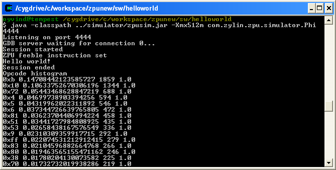
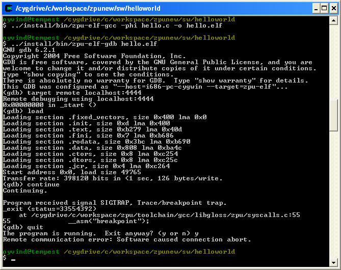

Getting started - a ZPU hello world program
The ZPU comes with a standard GCC toolchain and an instruction set simulator. This allows compiling, running & debugging simple test programs. The Simulator has
some very basic peripherals defined: counter, timer interrupt and a debug output port.
Installing
- Install Cygwin. http://www.cygwin.com
- Install Java
- Start Cygwin bash
- cd zpu/sw
- unzip tools/zputoolchain.zip
- zpu/sw/install/bin now has the .exe files for the GCC toolchain & GDB
- You may want to add install/bin from zputoolchain.zip to PATH.
export PATH=$PATH:<unzipdir>/install/bin
Hello world example
The ZPU toolchain comes with newlib & libstdc++ support which means that many C/C++ programs can be compiled without modification.
cd zpu/sw/helloworld
../install/bin/zpu-elf-gcc -phi hello.c -o hello.elf
Running the hello world example in GDB
- cd zpu/sw/helloworld
- Launch the simulator from a seperate bash shell:
java -classpath ../simulator/zpusim.jar -Xmx512m com.zylin.zpu.simulator.Phi 4444

- Launch GDB:
../install/bin/zpu-elf-gdb hello.elf
- Connect to target, load and run application:
(gdb) target remote localhost:4444
(gdb) load
(gdb) continue
